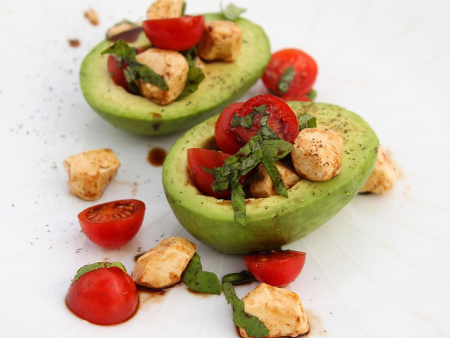

Caprese Stuffed Avocado Recipe
This recipe will give you instructions on how to cook caprese stuffed avocados. Everything you need to make this recipe is included below.

- Prep Time: 10 Mins
- Total Time 10 Mins
- Servings: 2
Ingredients
- 1 Avocado - peeled, pitted, and cut in half
- 1/4 cup fresh mozzarella pearls
- 1/4 cup cherry tomatoes, halved
- 6 fresh basil leaves, thinly sliced
- 1 tablespoon balsamic vinegar
- salt and pepper to taste
Directions
- Arrange avocado halves onto a plate.
- Toss together mozzarella pearls, cherry tomatoes, and basil in a small bowl. Spoon the Caprese filling into each avocado half and drizzle with balsamic vinegar. Season with salt and pepper. Serve immediately.